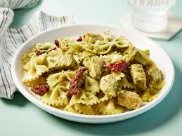

This Pesto Pasta with Chicken recipe is a quick, Italian-inspired dish that brings together tender pieces of chicken, cooked pasta, and a vibrant basil pesto sauce. The pesto, typically made from basil, garlic, olive oil, Parmesean cheese, and nuts -- acts as the centerpiece, coating the pasta with chicken in a fresh, herby flavor. The recipe often includes simple additions like garlic, cheese, and sometimes tomatoes or a touch of cream, creating a balance of richness and brightness while keeping the ingredient list approachable.
What makes this dish especially appealing is its simplicity and speed -- it's designed as a weeknight-friendly meal that can come together in about 20-30 minutes. The chicken is sually sautéed until golden, the pasta cooked until tender, and everything tossed together with pesto for cohesive, flavorful finish. The result is a comforting yet fresh pasta dish that's easy to customize, making it a go-to option for satisfying, low-effort dinner.